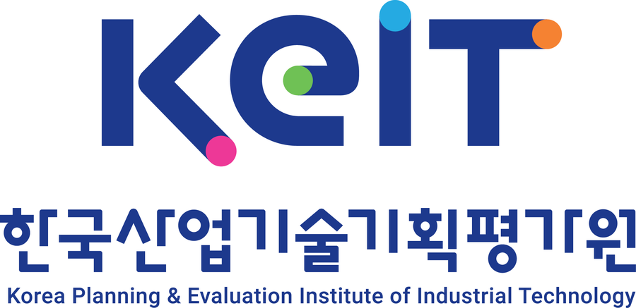
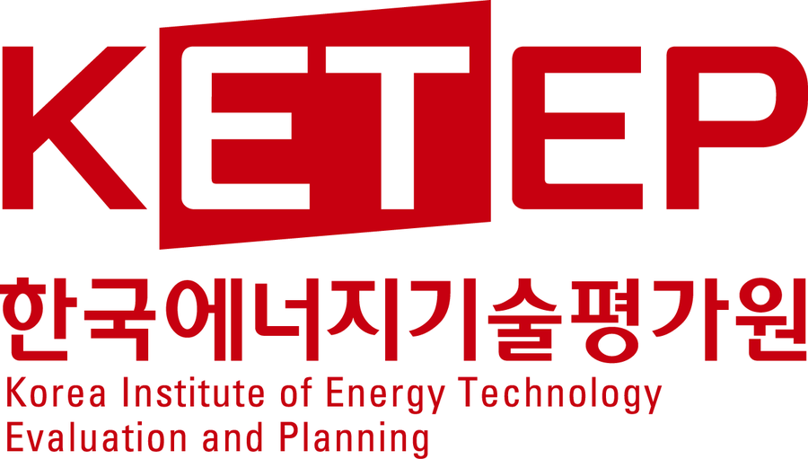
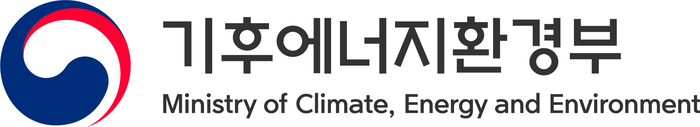
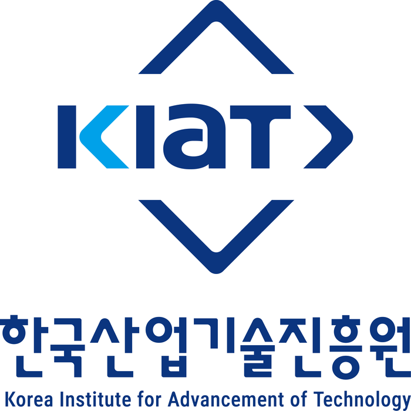

국립공주대학교 AI 에너지 및 배터리 솔루션 연구실(AI-EBS LAB)에서 배터리 에너지 저장 시스템(BESS)과 공장 에너지 관리 시스템(FEMS)을 연구하고 있습니다. 배터리의 건강 상태(SOH) 추정과 이상 진단, 그리고 제조공정 데이터를 활용한 공정 예측과 에너지·탄소 저감 방법에 관심을 두고 있습니다.
본 논문은 연속 공정의 예측 모델 구축 시 예측 성능을 최적화하기 위한 평활화, 특징 선택, 시퀀스 길이 결정이 미치는 영향에 관한 연구를 수행하였다. 실제 공정 데이터를 대상으로 평활화 3종, 특징 선택 4종, 시퀀스 길이 설정 3종을 결합한 총 36가지 조합의 성능을 평가하였을 때, 전건조 영역에서는 SMA, MI, 고정 창 조합이 RMSE 0.031, MAE 0.019, R2 0.982, 비선형성이 강한 후건조 영역에서는 SMA, mRMR, AMI 조합이 RMSE 0.023, MAE 0.019, R2 0.977의 결과를 보였다. 이를 통해 물리적 메커니즘 파악이 어려운 산업 데이터 환경에서 모델 입력 전 단계의 체계적인 데이터 가공 조합이 예측 정확도를 향상할 수 있음을 확인하였다.
정전류 충전 전압 궤적을 보조인자로 활용한 Multi-Task Transformer 기반 SOH 추정
김민준, 고동영, 김선혁
2026년도 한국통신학회 동계종합학술발표회 · pp. 149–150 · 2026
최근 리튬 이온 배터리의 건강 상태(State of Health, SOH)를 정확하게 추정하는 것은 전기차(EV) 및 에너지 저장 장치(ESS)의 안전한 운용과 잔여 수명 예측을 위한 핵심 과제이다. 본 논문에서는 실제 운행 환경의 불규칙한 방전 데이터가 가지는 한계를 극복하기 위해, 전기차의 정전류 충전 과정 중 발생하는 전압 궤적 데이터를 입력으로 Multi-Task Transformer의 예측 결과와 결합하여 SOH 추정 성능을 개선하는 아키텍처를 제안한다. MIT 데이터셋을 활용한 실험 결과, 제안된 모델은 기존 Transformer 단독 모델 대비 RMSE 12.90%, MAE 13.34%의 성능 향상을 달성하였고, 배터리 상태 진단 정확도는 88.25%로 5.80%p 향상되었으며, F1-Score는 0.7456으로 0.0699만큼 개선되었다. 이는 전압 궤적의 기울기 변화율 기반의 이상치 점수가 용량 감소 학습의 한계를 보완하는 보조 인자임을 입증하며, 향후 실시간 배터리 관리 시스템(BMS)의 정밀도 향상에 기여할 것으로 기대된다.
배터리 노화 패턴 필터링을 통한 Transformer-Isolation Forest 모델 제안
김민준, 고동영, 김선혁
2025년도 한국통신학회 추계종합학술발표회 · pp. 136–137 · 2025
본 논문은 Transformer 기반 특징 추출과 Isolation Forest 기반 필터링을 결합한 Transformer-Isolation Forest 모델을 제안한다. 제안 모델은 Transformer로 배터리 데이터의 잠재 특징을 추출한 뒤, Isolation Forest를 이용해 정상 상태 패턴에서 벗어나는 데이터를 제거한다. NASA 데이터셋을 이용한 실험을 통해 제안 모델의 필터링 성능을 검증하였으며, 이는 배터리 수명 예측 모델의 데이터 품질을 향상시키는 효과적인 전처리 프레임워크를 제시한다.
AIDER: AI-based Integrated Diagnosis and Energy Reasoning for Optimization in Manufacturing Processes
제조공정 에너지 이상탐지·원인분석·저감추론을 통합한 AI Agent 기반 에너지 최적화 기술 개발
참여 기간
2026.09 – 2031.08
사업명
우수연구-핵심연구(기본연구A)
지원 부처
전문기관
한국연구재단(NRF)
주관기관
국립공주대학교
학술연구과제진행 중
이차전지 AI 파운데이션 모델 개발을 위한 데이터 표준화 전략 및 활용 기반 구축 방안 연구
Research on Data Standardization Strategy and Application Framework for Secondary Battery AI Foundation Model Development
이차전지 AI 파운데이션 모델 개발을 위한 실측-가상연계형 데이터 표준화 전략 수립
참여 기간
2026.07 – 2027.03
사업명
정책연계형(국책)
지원 부처
전문기관
한국연구재단(NRF)
주관기관
국립공주대학교

연구개발과제진행 중
표면처리 명장 암묵지 학습 기반 AI 레시피 생성 및 공정 최적화 기술 개발
AI-Driven Recipe Generation and Process Optimization Based on Tacit Knowledge of Surface Treatment Masters
표면처리 명장의 암묵지를 학습한 AI 기반 도금 레시피 추천, 불량 원인 추론 및 보정 레시피 제시 기술 개발
참여 기간
2026.06 – 2027.02
사업명
제조암묵지기반AI모델개발(R&D)
지원 부처
전문기관
한국산업기술기획평가원(KEIT)
주관기관
로드피아

인력양성과제진행 중
AI 기반 비송전 대안(NWA) 통합운영 및 설비진단 융합기술 지역에너지혁신센터
Regional Energy Innovation Center for AI-Based Convergence Technology in Integrated Operation, Diagnostics, and Prognostics of Non-Wires Alternatives (NWA)
AI 기반 비송전 대안(NWA)의 계통 안정성·유연자원 운영·설비 신뢰성을 통합적으로 다루는 전력망 분석·운영 전문인력 양성
참여 기간
2026.04 – 2032.12
사업명
교육훈련
지원 부처

전문기관
한국에너지기술평가원(KETEP)
주관기관
국립공주대학교 산학협력단

연구개발과제진행 중
배터리·자동차 산업 대상 제품 전주기 탄소발자국 플랫폼(MCF) 개발 및 AI기술 기반 탄소저감 기술 개발
Development of Carbon Footprint Platform (MCF) and AI technology-based carbon reduction technology for battery and automotive industries